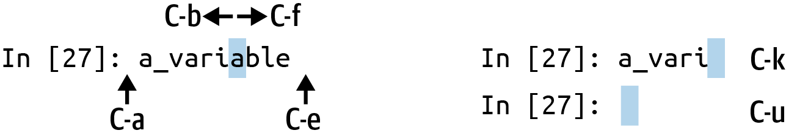

Appendix B — More on the IPython System
In Ch 2: Python Language Basics, IPython, and Jupyter Notebooks we looked at the basics of using the IPython shell and Jupyter notebook. In this appendix, we explore some deeper functionality in the IPython system that can either be used from the console or within Jupyter.
B.1 Terminal Keyboard Shortcuts
IPython has many keyboard shortcuts for navigating the prompt (which will be familiar to users of the Emacs text editor or the Unix bash shell) and interacting with the shell’s command history. Table B.1 summarizes some of the most commonly used shortcuts. See Figure B.1 for an illustration of a few of these, such as cursor movement.
| Keyboard shortcut | Description |
|---|---|
| Ctrl-P or up-arrow | Search backward in command history for commands starting with currently entered text |
| Ctrl-N or down-arrow | Search forward in command history for commands starting with currently entered text |
| Ctrl-R | Readline-style reverse history search (partial matching) |
| Ctrl-Shift-V | Paste text from clipboard |
| Ctrl-C | Interrupt currently executing code |
| Ctrl-A | Move cursor to beginning of line |
| Ctrl-E | Move cursor to end of line |
| Ctrl-K | Delete text from cursor until end of line |
| Ctrl-U | Discard all text on current line |
| Ctrl-F | Move cursor forward one character |
| Ctrl-B | Move cursor back one character |
| Ctrl-L | Clear screen |

Note that Jupyter notebooks have a largely separate set of keyboard shortcuts for navigation and editing. Since these shortcuts have evolved more rapidly than the ones in IPython, I encourage you to explore the integrated help system in the Jupyter notebook menus.
B.2 About Magic Commands
Special commands in IPython (which are not built into Python itself) are known as magic commands. These are designed to facilitate common tasks and enable you to easily control the behavior of the IPython system. A magic command is any command prefixed by the percent symbol %. For example, you can check the execution time of any Python statement, such as a matrix multiplication, using the %timeit magic function:
In [20]: a = np.random.standard_normal((100, 100))
In [20]: %timeit np.dot(a, a)
92.5 µs ± 3.43 µs per loop (mean ± std. dev. of 7 runs, 10000 loops each)Magic commands can be viewed as command-line programs to be run within the IPython system. Many of them have additional “command-line” options, which can all be viewed (as you might expect) using ?:
In [21]: %debug?
Docstring:
::
%debug [--breakpoint FILE:LINE] [statement [statement ...]]
Activate the interactive debugger.
This magic command support two ways of activating debugger.
One is to activate debugger before executing code. This way, you
can set a break point, to step through the code from the point.
You can use this mode by giving statements to execute and optionally
a breakpoint.
The other one is to activate debugger in post-mortem mode. You can
activate this mode simply running %debug without any argument.
If an exception has just occurred, this lets you inspect its stack
frames interactively. Note that this will always work only on the last
traceback that occurred, so you must call this quickly after an
exception that you wish to inspect has fired, because if another one
occurs, it clobbers the previous one.
If you want IPython to automatically do this on every exception, see
the %pdb magic for more details.
.. versionchanged:: 7.3
When running code, user variables are no longer expanded,
the magic line is always left unmodified.
positional arguments:
statement Code to run in debugger. You can omit this in cell
magic mode.
optional arguments:
--breakpoint <FILE:LINE>, -b <FILE:LINE>
Set break point at LINE in FILE.Magic functions can be used by default without the percent sign, as long as no variable is defined with the same name as the magic function in question. This feature is called automagic and can be enabled or disabled with %automagic.
Some magic functions behave like Python functions, and their output can be assigned to a variable:
In [22]: %pwd
Out[22]: '/home/wesm/code/pydata-book'
In [23]: foo = %pwd
In [24]: foo
Out[24]: '/home/wesm/code/pydata-book'Since IPython’s documentation is accessible from within the system, I encourage you to explore all of the special commands available by using %quickref or %magic. This information is shown in a console pager, so you will need to press q to exit from the pager. Table B.2 highlights some of the most critical commands for being productive in interactive computing and Python development in IPython.
| Command | Description |
|---|---|
%quickref |
Display the IPython Quick Reference Card |
%magic |
Display detailed documentation for all of the available magic commands |
%debug |
Enter the interactive debugger at the bottom of the last exception traceback |
%hist |
Print command input (and optionally output) history |
%pdb |
Automatically enter debugger after any exception |
%paste |
Execute preformatted Python code from clipboard |
%cpaste |
Open a special prompt for manually pasting Python code to be executed |
%reset |
Delete all variables/names defined in an interactive namespace |
%page <OBJECT> |
Pretty-print the object and display it through a pager |
%run <script.py> |
Run a Python script inside IPython |
%prun <statement> |
Execute <statement> with cProfile and report the profiler output |
%time <statement> |
Report the execution time of a single statement |
%timeit <statement> |
Run a statement multiple times to compute an ensemble average execution time; useful for timing code with very short execution time |
%who, %who_ls, %whos |
Display variables defined in interactive namespace, with varying levels of information/verbosity |
%xdel <variable> |
Delete a variable and attempt to clear any references to the object in the IPython internals |
The %run Command
You can run any file as a Python program inside the environment of your IPython session using the %run command. Suppose you had the following simple script stored in script.py:
def f(x, y, z):
return (x + y) / z
a = 5
b = 6
c = 7.5
result = f(a, b, c)You can execute this by passing the filename to %run:
In [14]: %run script.pyThe script is run in an empty namespace (with no imports or other variables defined), so that the behavior should be identical to running the program on the command line using python script.py. All of the variables (imports, functions, and globals) defined in the file (up until an exception, if any, is raised) will then be accessible in the IPython shell:
In [15]: c
Out [15]: 7.5
In [16]: result
Out[16]: 1.4666666666666666If a Python script expects command-line arguments (to be found in sys.argv), these can be passed after the file path as though run on the command line.
If you want to give a script access to variables already defined in the interactive IPython namespace, use %run -i instead of plain %run.
In the Jupyter notebook, you can also use the related %load magic function, which imports a script into a code cell:
In [16]: %load script.py
def f(x, y, z):
return (x + y) / z
a = 5
b = 6
c = 7.5
result = f(a, b, c)Interrupting running code
Pressing Ctrl-C while any code is running, whether a script through %run or a long-running command, will raise a KeyboardInterrupt. This will cause nearly all Python programs to stop immediately except in certain unusual cases.
When a piece of Python code has called into some compiled extension modules, pressing Ctrl-C will not always cause the program execution to stop immediately. In such cases, you will have to either wait until control is returned to the Python interpreter, or in more dire circumstances, forcibly terminate the Python process in your operating system (such as using Task Manager on Windows or the kill command on Linux).
Executing Code from the Clipboard
If you are using the Jupyter notebook, you can copy and paste code into any code cell and execute it. It is also possible to run code from the clipboard in the IPython shell. Suppose you had the following code in some other application:
x = 5
y = 7
if x > 5:
x += 1
y = 8The most foolproof methods are the %paste and %cpaste magic functions (note that these do not work in Jupyter since you can copy and paste into a Jupyter code cell). %paste takes whatever text is in the clipboard and executes it as a single block in the shell:
In [17]: %paste
x = 5
y = 7
if x > 5:
x += 1
y = 8
## -- End pasted text --%cpaste is similar, except that it gives you a special prompt for pasting code into:
In [18]: %cpaste
Pasting code; enter '--' alone on the line to stop or use Ctrl-D.
:x = 5
:y = 7
:if x > 5:
: x += 1
:
: y = 8
:--With the %cpaste block, you have the freedom to paste as much code as you like before executing it. You might decide to use %cpaste to look at the pasted code before executing it. If you accidentally paste the wrong code, you can break out of the %cpaste prompt by pressing Ctrl-C.
B.3 Using the Command History
IPython maintains a small on-disk database containing the text of each command that you execute. This serves various purposes:
Searching, completing, and executing previously executed commands with minimal typing
Persisting the command history between sessions
Logging the input/output history to a file
These features are more useful in the shell than in the notebook, since the notebook by design keeps a log of the input and output in each code cell.
Searching and Reusing the Command History
The IPython shell lets you search and execute previous code or other commands. This is useful, as you may often find yourself repeating the same commands, such as a %run command or some other code snippet. Suppose you had run:
In[7]: %run first/second/third/data_script.pyand then explored the results of the script (assuming it ran successfully), only to find that you made an incorrect calculation. After figuring out the problem and modifying data_script.py, you can start typing a few letters of the %run command and then press either the Ctrl-P key combination or the up arrow key. This will search the command history for the first prior command matching the letters you typed. Pressing either Ctrl-P or the up arrow key multiple times will continue to search through the history. If you pass over the command you wish to execute, fear not. You can move forward through the command history by pressing either Ctrl-N or the down arrow key. After doing this a few times, you may start pressing these keys without thinking!
Using Ctrl-R gives you the same partial incremental searching capability provided by the readline used in Unix-style shells, such as the bash shell. On Windows, readline functionality is emulated by IPython. To use this, press Ctrl-R and then type a few characters contained in the input line you want to search for:
In [1]: a_command = foo(x, y, z)
(reverse-i-search)`com': a_command = foo(x, y, z)Pressing Ctrl-R will cycle through the history for each line, matching the characters you’ve typed.
Input and Output Variables
Forgetting to assign the result of a function call to a variable can be very annoying. An IPython session stores references to both the input commands and output Python objects in special variables. The previous two outputs are stored in the _ (one underscore) and __ (two underscores) variables, respectively:
In [18]: 'input1'
Out[18]: 'input1'
In [19]: 'input2'
Out[19]: 'input2'
In [20]: __
Out[20]: 'input1'
In [21]: 'input3'
Out[21]: 'input3'
In [22]: _
Out[22]: 'input3'Input variables are stored in variables named _iX, where X is the input line number.
For each input variable there is a corresponding output variable _X. So after input line 27, say, there will be two new variables, _27 (for the output) and _i27 for the input:
In [26]: foo = 'bar'
In [27]: foo
Out[27]: 'bar'
In [28]: _i27
Out[28]: u'foo'
In [29]: _27
Out[29]: 'bar'Since the input variables are strings, they can be executed again with the Python eval keyword:
In [30]: eval(_i27)
Out[30]: 'bar'Here, _i27 refers to the code input in In [27].
Several magic functions allow you to work with the input and output history. %hist prints all or part of the input history, with or without line numbers. %reset clears the interactive namespace and optionally the input and output caches. The %xdel magic function removes all references to a particular object from the IPython machinery. See the documentation for these magics for more details.
When working with very large datasets, keep in mind that IPython’s input and output history may cause objects referenced there to not be garbage collected (freeing up the memory), even if you delete the variables from the interactive namespace using the del keyword. In such cases, careful usage of %xdel and %reset can help you avoid running into memory problems.
B.4 Interacting with the Operating System
Another feature of IPython is that it allows you to access the filesystem and operating system shell. This means, among other things, that you can perform most standard command-line actions as you would in the Windows or Unix (Linux, macOS) shell without having to exit IPython. This includes shell commands, changing directories, and storing the results of a command in a Python object (list or string). There are also command aliasing and directory bookmarking features.
See Table B.3 for a summary of magic functions and syntax for calling shell commands. I’ll briefly visit these features in the next few sections.
| Command | Description |
|---|---|
!cmd |
Execute cmd in the system shell |
output = !cmd args |
Run cmd and store the stdout in output |
%alias alias_name cmd |
Define an alias for a system (shell) command |
%bookmark |
Utilize IPython’s directory bookmarking system |
%cd <directory> |
Change system working directory to passed directory |
%pwd |
Return to the current system working directory |
%pushd <directory> |
Place current directory on stack and change to target directory |
%popd |
Change to directory popped off the top of the stack |
%dirs |
Return a list containing the current directory stack |
%dhist |
Print the history of visited directories |
%env |
Return the system environment variables as a dictionary |
%matplotlib |
Configure matplotlib integration options |
Shell Commands and Aliases
Starting a line in IPython with an exclamation point !, or bang, tells IPython to execute everything after the bang in the system shell. This means that you can delete files (using rm or del, depending on your OS), change directories, or execute any other process.
You can store the console output of a shell command in a variable by assigning the expression escaped with ! to a variable. For example, on my Linux-based machine connected to the internet via Ethernet, I can get my IP address as a Python variable:
In [1]: ip_info = !ifconfig wlan0 | grep "inet "
In [2]: ip_info[0].strip()
Out[2]: 'inet addr:10.0.0.11 Bcast:10.0.0.255 Mask:255.255.255.0'The returned Python object ip_info is actually a custom list type containing various versions of the console output.
IPython can also substitute in Python values defined in the current environment when using !. To do this, preface the variable name with the dollar sign $:
In [3]: foo = 'test*'
In [4]: !ls $foo
test4.py test.py test.xmlThe %alias magic function can define custom shortcuts for shell commands. As an example:
In [1]: %alias ll ls -l
In [2]: ll /usr
total 332
drwxr-xr-x 2 root root 69632 2012-01-29 20:36 bin/
drwxr-xr-x 2 root root 4096 2010-08-23 12:05 games/
drwxr-xr-x 123 root root 20480 2011-12-26 18:08 include/
drwxr-xr-x 265 root root 126976 2012-01-29 20:36 lib/
drwxr-xr-x 44 root root 69632 2011-12-26 18:08 lib32/
lrwxrwxrwx 1 root root 3 2010-08-23 16:02 lib64 -> lib/
drwxr-xr-x 15 root root 4096 2011-10-13 19:03 local/
drwxr-xr-x 2 root root 12288 2012-01-12 09:32 sbin/
drwxr-xr-x 387 root root 12288 2011-11-04 22:53 share/
drwxrwsr-x 24 root src 4096 2011-07-17 18:38 src/You can execute multiple commands just as on the command line by separating them with semicolons:
In [558]: %alias test_alias (cd examples; ls; cd ..)
In [559]: test_alias
macrodata.csv spx.csv tips.csvYou’ll notice that IPython “forgets” any aliases you define interactively as soon as the session is closed. To create permanent aliases, you will need to use the configuration system.
Directory Bookmark System
IPython has a directory bookmarking system to enable you to save aliases for common directories so that you can jump around easily. For example, suppose you wanted to create a bookmark that points to the supplementary materials for this book:
In [6]: %bookmark py4da /home/wesm/code/pydata-bookOnce you've done this, when you use the %cd magic, you can use any bookmarks you’ve defined:
In [7]: cd py4da
(bookmark:py4da) -> /home/wesm/code/pydata-book
/home/wesm/code/pydata-bookIf a bookmark name conflicts with a directory name in your current working directory, you can use the -b flag to override and use the bookmark location. Using the -l option with %bookmark lists all of your bookmarks:
In [8]: %bookmark -l
Current bookmarks:
py4da -> /home/wesm/code/pydata-book-sourceBookmarks, unlike aliases, are automatically persisted between IPython sessions.
B.5 Software Development Tools
In addition to being a comfortable environment for interactive computing and data exploration, IPython can also be a useful companion for general Python software development. In data analysis applications, it’s important first to have correct code. Fortunately, IPython has closely integrated and enhanced the built-in Python pdb debugger. Secondly, you want your code to be fast. For this, IPython has convenient integrated code timing and profiling tools. I will give an overview of these tools in detail here.
Interactive Debugger
IPython’s debugger enhances pdb with tab completion, syntax highlighting, and context for each line in exception tracebacks. One of the best times to debug code is right after an error has occurred. The %debug command, when entered immediately after an exception, invokes the “postmortem” debugger and drops you into the stack frame where the exception was raised:
In [2]: run examples/ipython_bug.py
---------------------------------------------------------------------------
AssertionError Traceback (most recent call last)
/home/wesm/code/pydata-book/examples/ipython_bug.py in <module>()
13 throws_an_exception()
14
---> 15 calling_things()
/home/wesm/code/pydata-book/examples/ipython_bug.py in calling_things()
11 def calling_things():
12 works_fine()
---> 13 throws_an_exception()
14
15 calling_things()
/home/wesm/code/pydata-book/examples/ipython_bug.py in throws_an_exception()
7 a = 5
8 b = 6
----> 9 assert(a + b == 10)
10
11 def calling_things():
AssertionError:
In [3]: %debug
> /home/wesm/code/pydata-book/examples/ipython_bug.py(9)throws_an_exception()
8 b = 6
----> 9 assert(a + b == 10)
10
ipdb>Once inside the debugger, you can execute arbitrary Python code and explore all of the objects and data (which have been “kept alive” by the interpreter) inside each stack frame. By default you start in the lowest level, where the error occurred. By typing u (up) and d (down), you can switch between the levels of the stack trace:
ipdb> u
> /home/wesm/code/pydata-book/examples/ipython_bug.py(13)calling_things()
12 works_fine()
---> 13 throws_an_exception()
14Executing the %pdb command makes IPython automatically invoke the debugger after any exception, a mode that many users will find useful.
It’s also helpful to use the debugger when developing code, especially when you need to set a breakpoint or step through the execution of a function or script to examine its behavior at each step. There are several ways to accomplish this. The first is by using %run with the -d flag, which invokes the debugger before executing any code in the passed script. You must immediately type s (step) to enter the script:
In [5]: run -d examples/ipython_bug.py
Breakpoint 1 at /home/wesm/code/pydata-book/examples/ipython_bug.py:1
NOTE: Enter 'c' at the ipdb> prompt to start your script.
> <string>(1)<module>()
ipdb> s
--Call--
> /home/wesm/code/pydata-book/examples/ipython_bug.py(1)<module>()
1---> 1 def works_fine():
2 a = 5
3 b = 6After this point, it’s up to you how you want to work your way through the file. For example, in the preceding exception, we could set a breakpoint right before calling the works_fine function, and run the script until we reach the breakpoint by typing c (continue):
ipdb> b 12
ipdb> c
> /home/wesm/code/pydata-book/examples/ipython_bug.py(12)calling_things()
11 def calling_things():
2--> 12 works_fine()
13 throws_an_exception()At this point, you can step into works_fine() or execute works_fine() by typing n (next) to advance to the next line:
ipdb> n
> /home/wesm/code/pydata-book/examples/ipython_bug.py(13)calling_things()
2 12 works_fine()
---> 13 throws_an_exception()
14Then, we could step into throws_an_exception and advance to the line where the error occurs and look at the variables in the scope. Note that debugger commands take precedence over variable names; in such cases, preface the variables with ! to examine their contents:
ipdb> s
--Call--
> /home/wesm/code/pydata-book/examples/ipython_bug.py(6)throws_an_exception()
5
----> 6 def throws_an_exception():
7 a = 5
ipdb> n
> /home/wesm/code/pydata-book/examples/ipython_bug.py(7)throws_an_exception()
6 def throws_an_exception():
----> 7 a = 5
8 b = 6
ipdb> n
> /home/wesm/code/pydata-book/examples/ipython_bug.py(8)throws_an_exception()
7 a = 5
----> 8 b = 6
9 assert(a + b == 10)
ipdb> n
> /home/wesm/code/pydata-book/examples/ipython_bug.py(9)throws_an_exception()
8 b = 6
----> 9 assert(a + b == 10)
10
ipdb> !a
5
ipdb> !b
6In my experience, developing proficiency with the interactive debugger takes time and practice. See Table B.4 for a full catalog of the debugger commands. If you are accustomed to using an IDE, you might find the terminal-driven debugger to be a bit unforgiving at first, but that will improve in time. Some of the Python IDEs have excellent GUI debuggers, so most users can find something that works for them.
| Command | Action |
|---|---|
h(elp) |
Display command list |
help <command> |
Show documentation for <command> |
c(ontinue) |
Resume program execution |
q(uit) |
Exit debugger without executing any more code |
b(reak) <number> |
Set breakpoint at <number> in current file |
b <path/to/file.py:number> |
Set breakpoint at line <number> in specified file |
s(tep) |
Step into function call |
n(ext) |
Execute current line and advance to next line at current level |
u(p)/d(own) |
Move up/down in function call stack |
a(rgs) |
Show arguments for current function |
debug <statement> |
Invoke statement <statement> in new (recursive) debugger |
l(ist) <statement> |
Show current position and context at current level of stack |
w(here) |
Print full stack trace with context at current position |
Other ways to use the debugger
There are a couple of other useful ways to invoke the debugger. The first is by using a special set_trace function (named after pdb.set_trace), which is basically a “poor man’s breakpoint.” Here are two small recipes you might want to put somewhere for your general use (potentially adding them to your IPython profile, as I do):
from IPython.core.debugger import Pdb
def set_trace():
Pdb(.set_trace(sys._getframe().f_back)
def debug(f, *args, **kwargs):
pdb = Pdb()
return pdb.runcall(f, *args, **kwargs)The first function, set_trace, provides a convenient way to put a breakpoint somewhere in your code. You can use a set_trace in any part of your code that you want to temporarily stop to examine it more closely (e.g., right before an exception occurs):
In [7]: run examples/ipython_bug.py
> /home/wesm/code/pydata-book/examples/ipython_bug.py(16)calling_things()
15 set_trace()
---> 16 throws_an_exception()
17Typing c (continue) will cause the code to resume normally with no harm done.
The debug function we just looked at enables you to invoke the interactive debugger easily on an arbitrary function call. Suppose we had written a function like the following, and we wished to step through its logic:
def f(x, y, z=1):
tmp = x + y
return tmp / zOrdinarily using f would look like f(1, 2, z=3). To instead step into f, pass f as the first argument to debug, followed by the positional and keyword arguments to be passed to f:
In [6]: debug(f, 1, 2, z=3)
> <ipython-input>(2)f()
1 def f(x, y, z):
----> 2 tmp = x + y
3 return tmp / z
ipdb>These two recipes have saved me a lot of time over the years.
Lastly, the debugger can be used in conjunction with %run. By running a script with %run -d, you will be dropped directly into the debugger, ready to set any breakpoints and start the script:
In [1]: %run -d examples/ipython_bug.py
Breakpoint 1 at /home/wesm/code/pydata-book/examples/ipython_bug.py:1
NOTE: Enter 'c' at the ipdb> prompt to start your script.
> <string>(1)<module>()
ipdb>Adding -b with a line number starts the debugger with a breakpoint set already:
In [2]: %run -d -b2 examples/ipython_bug.py
Breakpoint 1 at /home/wesm/code/pydata-book/examples/ipython_bug.py:2
NOTE: Enter 'c' at the ipdb> prompt to start your script.
> <string>(1)<module>()
ipdb> c
> /home/wesm/code/pydata-book/examples/ipython_bug.py(2)works_fine()
1 def works_fine():
1---> 2 a = 5
3 b = 6
ipdb>Timing Code: %time and %timeit
For larger-scale or longer-running data analysis applications, you may wish to measure the execution time of various components or of individual statements or function calls. You may want a report of which functions are taking up the most time in a complex process. Fortunately, IPython enables you to get this information conveniently while you are developing and testing your code.
Timing code by hand using the built-in time module and its functions, time.clock and time.time, is often tedious and repetitive, as you must write the same uninteresting boilerplate code:
import time
start = time.time()
for i in range(iterations):
# some code to run here
elapsed_per = (time.time() - start) / iterationsSince this is such a common operation, IPython has two magic functions, %time and %timeit, to automate this process for you.
%time runs a statement once, reporting the total execution time. Suppose we had a large list of strings, and we wanted to compare different methods of selecting all strings starting with a particular prefix. Here is a list of 600,000 strings and two identical methods of selecting only the ones that start with 'foo':
# a very large list of strings
In [11]: strings = ['foo', 'foobar', 'baz', 'qux',
....: 'python', 'Guido Van Rossum'] * 100000
In [12]: method1 = [x for x in strings if x.startswith('foo')]
In [13]: method2 = [x for x in strings if x[:3] == 'foo']It looks like they should be about the same performance-wise, right? We can check for sure using %time:
In [14]: %time method1 = [x for x in strings if x.startswith('foo')]
CPU times: user 49.6 ms, sys: 676 us, total: 50.3 ms
Wall time: 50.1 ms
In [15]: %time method2 = [x for x in strings if x[:3] == 'foo']
CPU times: user 40.3 ms, sys: 603 us, total: 40.9 ms
Wall time: 40.6 msThe Wall time (short for "wall-clock time") is the main number of interest. From these timings, we can infer that there is some performance difference, but it's not a very precise measurement. If you try %time-ing those statements multiple times yourself, you’ll find that the results are somewhat variable. To get a more precise measurement, use the %timeit magic function. Given an arbitrary statement, it has a heuristic to run a statement multiple times to produce a more accurate average runtime (these results may be different on your system):
In [563]: %timeit [x for x in strings if x.startswith('foo')]
10 loops, best of 3: 159 ms per loop
In [564]: %timeit [x for x in strings if x[:3] == 'foo']
10 loops, best of 3: 59.3 ms per loopThis seemingly innocuous example illustrates that it is worth understanding the performance characteristics of the Python standard library, NumPy, pandas, and other libraries used in this book. In larger-scale data analysis applications, those milliseconds will start to add up!
%timeit is especially useful for analyzing statements and functions with very short execution times, even at the level of microseconds (millionths of a second) or nanoseconds (billionths of a second). These may seem like insignificant amounts of time, but of course a 20-microsecond function invoked 1 million times takes 15 seconds longer than a 5-microsecond function. In the preceding example, we could very directly compare the two string operations to understand their performance characteristics:
In [565]: x = 'foobar'
In [566]: y = 'foo'
In [567]: %timeit x.startswith(y)
1000000 loops, best of 3: 267 ns per loop
In [568]: %timeit x[:3] == y
10000000 loops, best of 3: 147 ns per loopBasic Profiling: %prun and %run -p
Profiling code is closely related to timing code, except it is concerned with determining where time is spent. The main Python profiling tool is the cProfile module, which is not specific to IPython at all. cProfile executes a program or any arbitrary block of code while keeping track of how much time is spent in each function.
A common way to use cProfile is on the command line, running an entire program and outputting the aggregated time per function. Suppose we had a script that does some linear algebra in a loop (computing the maximum absolute eigenvalues of a series of 100 × 100 matrices):
import numpy as np
from numpy.linalg import eigvals
def run_experiment(niter=100):
K = 100
results = []
for _ in range(niter):
mat = np.random.standard_normal((K, K))
max_eigenvalue = np.abs(eigvals(mat)).max()
results.append(max_eigenvalue)
return results
some_results = run_experiment()
print('Largest one we saw: {0}'.format(np.max(some_results)))You can run this script through cProfile using the following in the command line:
python -m cProfile cprof_example.pyIf you try that, you’ll find that the output is sorted by function name. This makes it a bit hard to get an idea of where the most time is spent, so it’s useful to specify a sort order using the -s flag:
$ python -m cProfile -s cumulative cprof_example.py
Largest one we saw: 11.923204422
15116 function calls (14927 primitive calls) in 0.720 seconds
Ordered by: cumulative time
ncalls tottime percall cumtime percall filename:lineno(function)
1 0.001 0.001 0.721 0.721 cprof_example.py:1(<module>)
100 0.003 0.000 0.586 0.006 linalg.py:702(eigvals)
200 0.572 0.003 0.572 0.003 {numpy.linalg.lapack_lite.dgeev}
1 0.002 0.002 0.075 0.075 __init__.py:106(<module>)
100 0.059 0.001 0.059 0.001 {method 'randn')
1 0.000 0.000 0.044 0.044 add_newdocs.py:9(<module>)
2 0.001 0.001 0.037 0.019 __init__.py:1(<module>)
2 0.003 0.002 0.030 0.015 __init__.py:2(<module>)
1 0.000 0.000 0.030 0.030 type_check.py:3(<module>)
1 0.001 0.001 0.021 0.021 __init__.py:15(<module>)
1 0.013 0.013 0.013 0.013 numeric.py:1(<module>)
1 0.000 0.000 0.009 0.009 __init__.py:6(<module>)
1 0.001 0.001 0.008 0.008 __init__.py:45(<module>)
262 0.005 0.000 0.007 0.000 function_base.py:3178(add_newdoc)
100 0.003 0.000 0.005 0.000 linalg.py:162(_assertFinite)
...Only the first 15 rows of the output are shown. It’s easiest to read by scanning down the cumtime column to see how much total time was spent inside each function. Note that if a function calls some other function, the clock does not stop running. cProfile records the start and end time of each function call and uses that to produce the timing.
In addition to the command-line usage, cProfile can also be used programmatically to profile arbitrary blocks of code without having to run a new process. IPython has a convenient interface to this capability using the %prun command and the -p option to %run. %prun takes the same “command-line options” as cProfile but will profile an arbitrary Python statement instead of a whole .py file:
In [4]: %prun -l 7 -s cumulative run_experiment()
4203 function calls in 0.643 seconds
Ordered by: cumulative time
List reduced from 32 to 7 due to restriction <7>
ncalls tottime percall cumtime percall filename:lineno(function)
1 0.000 0.000 0.643 0.643 <string>:1(<module>)
1 0.001 0.001 0.643 0.643 cprof_example.py:4(run_experiment)
100 0.003 0.000 0.583 0.006 linalg.py:702(eigvals)
200 0.569 0.003 0.569 0.003 {numpy.linalg.lapack_lite.dgeev}
100 0.058 0.001 0.058 0.001 {method 'randn'}
100 0.003 0.000 0.005 0.000 linalg.py:162(_assertFinite)
200 0.002 0.000 0.002 0.000 {method 'all' of 'numpy.ndarray'}Similarly, calling %run -p -s cumulative cprof_example.py has the same effect as the command-line approach, except you never have to leave IPython.
In the Jupyter notebook, you can use the %%prun magic (two % signs) to profile an entire code block. This pops up a separate window with the profile output. This can be useful in getting possibly quick answers to questions like, "Why did that code block take so long to run?"
There are other tools available that help make profiles easier to understand when you are using IPython or Jupyter. One of these is SnakeViz, which produces an interactive visualization of the profile results using D3.js.
Profiling a Function Line by Line
In some cases, the information you obtain from %prun (or another cProfile-based profile method) may not tell the whole story about a function’s execution time, or it may be so complex that the results, aggregated by function name, are hard to interpret. For this case, there is a small library called line_profiler (obtainable via PyPI or one of the package management tools). It contains an IPython extension enabling a new magic function %lprun that computes a line-by-line-profiling of one or more functions. You can enable this extension by modifying your IPython configuration (see the IPython documentation or the section on configuration later in this appendix) to include the following line:
# A list of dotted module names of IPython extensions to load.
c.InteractiveShellApp.extensions = ['line_profiler']You can also run the command:
%load_ext line_profilerline_profiler can be used programmatically (see the full documentation), but it is perhaps most powerful when used interactively in IPython. Suppose you had a module prof_mod with the following code doing some NumPy array operations (if you want to reproduce this example, put this code into a new file prof_mod.py):
from numpy.random import randn
def add_and_sum(x, y):
added = x + y
summed = added.sum(axis=1)
return summed
def call_function():
x = randn(1000, 1000)
y = randn(1000, 1000)
return add_and_sum(x, y)If we wanted to understand the performance of the add_and_sum function, %prun gives us the following:
In [569]: %run prof_mod
In [570]: x = randn(3000, 3000)
In [571]: y = randn(3000, 3000)
In [572]: %prun add_and_sum(x, y)
4 function calls in 0.049 seconds
Ordered by: internal time
ncalls tottime percall cumtime percall filename:lineno(function)
1 0.036 0.036 0.046 0.046 prof_mod.py:3(add_and_sum)
1 0.009 0.009 0.009 0.009 {method 'sum' of 'numpy.ndarray'}
1 0.003 0.003 0.049 0.049 <string>:1(<module>)This is not especially enlightening. With the line_profiler IPython extension activated, a new command %lprun is available. The only difference in usage is that we must instruct %lprun which function or functions we wish to profile. The general syntax is:
%lprun -f func1 -f func2 statement_to_profileIn this case, we want to profile add_and_sum, so we run:
In [573]: %lprun -f add_and_sum add_and_sum(x, y)
Timer unit: 1e-06 s
File: prof_mod.py
Function: add_and_sum at line 3
Total time: 0.045936 s
Line # Hits Time Per Hit % Time Line Contents
==============================================================
3 def add_and_sum(x, y):
4 1 36510 36510.0 79.5 added = x + y
5 1 9425 9425.0 20.5 summed = added.sum(axis=1)
6 1 1 1.0 0.0 return summedThis can be much easier to interpret. In this case, we profiled the same function we used in the statement. Looking at the preceding module code, we could call call_function and profile that as well as add_and_sum, thus getting a full picture of the performance of the code:
In [574]: %lprun -f add_and_sum -f call_function call_function()
Timer unit: 1e-06 s
File: prof_mod.py
Function: add_and_sum at line 3
Total time: 0.005526 s
Line # Hits Time Per Hit % Time Line Contents
==============================================================
3 def add_and_sum(x, y):
4 1 4375 4375.0 79.2 added = x + y
5 1 1149 1149.0 20.8 summed = added.sum(axis=1)
6 1 2 2.0 0.0 return summed
File: prof_mod.py
Function: call_function at line 8
Total time: 0.121016 s
Line # Hits Time Per Hit % Time Line Contents
==============================================================
8 def call_function():
9 1 57169 57169.0 47.2 x = randn(1000, 1000)
10 1 58304 58304.0 48.2 y = randn(1000, 1000)
11 1 5543 5543.0 4.6 return add_and_sum(x, y)As a general rule of thumb, I tend to prefer %prun (cProfile) for “macro” profiling, and %lprun (line_profiler) for “micro” profiling. It’s worthwhile to have a good understanding of both tools.
The reason that you must explicitly specify the names of the functions you want to profile with %lprun is that the overhead of “tracing” the execution time of each line is substantial. Tracing functions that are not of interest has the potential to significantly alter the profile results.
B.6 Tips for Productive Code Development Using IPython
Writing code in a way that makes it convenient to develop, debug, and ultimately use interactively may be a paradigm shift for many users. There are procedural details like code reloading that may require some adjustment, as well as coding style concerns.
Therefore, implementing most of the strategies described in this section is more of an art than a science and will require some experimentation on your part to determine a way to write your Python code that is effective for you. Ultimately you want to structure your code in a way that makes it convenient to use iteratively and be able to explore the results of running a program or function as effortlessly as possible. I have found software designed with IPython in mind to be easier to work with than code intended only to be run as as standalone command-line application. This becomes especially important when something goes wrong and you have to diagnose an error in code that you or someone else might have written months or years beforehand.
Reloading Module Dependencies
In Python, when you type import some_lib, the code in some_lib is executed, and all the variables, functions, and imports defined within are stored in the newly created some_lib module namespace. The next time you use import some_lib, you will get a reference to the existing module namespace. The potential difficulty in interactive IPython code development comes when you, say, %run a script that depends on some other module where you may have made changes. Suppose I had the following code in test_script.py:
import some_lib
x = 5
y = [1, 2, 3, 4]
result = some_lib.get_answer(x, y)If you were to execute %run test_script.py then modify some_lib.py, the next time you execute %run test_script.py you will still get the old version of some_lib.py because of Python’s “load-once” module system. This behavior differs from some other data analysis environments, like MATLAB, which automatically propagate code changes.1 To cope with this, you have a couple of options. The first way is to use the reload function in the importlib module in the standard library:
import some_lib
import importlib
importlib.reload(some_lib)This attempts to give you a fresh copy of some_lib.py every time you run test_script.py (but there are some scenarios where it will not). Obviously, if the dependencies go deeper, it might be a bit tricky to be inserting usages of reload all over the place. For this problem, IPython has a special dreload function (not a magic function) for “deep” (recursive) reloading of modules. If I were to run some_lib.py then use dreload(some_lib), it will attempt to reload some_lib as well as all of its dependencies. This will not work in all cases, unfortunately, but when it does, it beats having to restart IPython.
Code Design Tips
There’s no simple recipe for this, but here are some high-level principles I have found effective in my own work.
Keep relevant objects and data alive
It’s not unusual to see a program written for the command line with a structure somewhat like the following:
from my_functions import g
def f(x, y):
return g(x + y)
def main():
x = 6
y = 7.5
result = x + y
if __name__ == '__main__':
main()Do you see what might go wrong if we were to run this program in IPython? After it’s done, none of the results or objects defined in the main function will be accessible in the IPython shell. A better way is to have whatever code is in main execute directly in the module’s global namespace (or in the if __name__ == '__main__': block, if you want the module to also be importable). That way, when you %run the code, you’ll be able to look at all of the variables defined in main. This is equivalent to defining top-level variables in cells in the Jupyter notebook.
Flat is better than nested
Deeply nested code makes me think about the many layers of an onion. When testing or debugging a function, how many layers of the onion must you peel back in order to reach the code of interest? The idea that “flat is better than nested” is a part of the Zen of Python, and it applies generally to developing code for interactive use as well. Making functions and classes as decoupled and modular as possible makes them easier to test (if you are writing unit tests), debug, and use interactively.
Overcome a fear of longer files
If you come from a Java (or another such language) background, you may have been told to keep files short. In many languages, this is sound advice; long length is usually a bad “code smell,” indicating refactoring or reorganization may be necessary. However, while developing code using IPython, working with 10 small but interconnected files (under, say, 100 lines each) is likely to cause you more headaches in general than 2 or 3 longer files. Fewer files means fewer modules to reload and less jumping between files while editing, too. I have found maintaining larger modules, each with high internal cohesion (the code all relates to solving the same kinds of problems), to be much more useful and Pythonic. After iterating toward a solution, of course it sometimes will make sense to refactor larger files into smaller ones.
Obviously, I don’t support taking this argument to the extreme, which would to be to put all of your code in a single monstrous file. Finding a sensible and intuitive module and package structure for a large codebase often takes a bit of work, but it is especially important to get right in teams. Each module should be internally cohesive, and it should be as obvious as possible where to find functions and classes responsible for each area of functionality.
B.7 Advanced IPython Features
Making full use of the IPython system may lead you to write your code in a slightly different way, or to dig into the configuration.
Profiles and Configuration
Most aspects of the appearance (colors, prompt, spacing between lines, etc.) and behavior of the IPython and Jupyter environments are configurable through an extensive configuration system. Here are some things you can do via configuration:
Change the color scheme
Change how the input and output prompts look, or remove the blank line after
Outand before the nextInpromptExecute an arbitrary list of Python statements (e.g., imports that you use all the time or anything else you want to happen each time you launch IPython)
Enable always-on IPython extensions, like the
%lprunmagic inline_profilerEnable Jupyter extensions
Define your own magics or system aliases
Configurations for the IPython shell are specified in special ipython_config.py files, which are usually found in the .ipython/ directory in your user home directory. Configuration is performed based on a particular profile. When you start IPython normally, you load up, by default, the default profile, stored in the profile_default directory. Thus, on my Linux OS, the full path to my default IPython configuration file is:
/home/wesm/.ipython/profile_default/ipython_config.pyTo initialize this file on your system, run this in the terminal:
ipython profile create defaultI’ll spare you the complete details of what’s in this file. Fortunately, it has comments describing what each configuration option is for, so I will leave it to the reader to tinker and customize. One additional useful feature is that it’s possible to have multiple profiles. Suppose you wanted to have an alternative IPython configuration tailored for a particular application or project. Creating a new profile involves typing the following:
ipython profile create secret_projectOnce you’ve done this, edit the config files in the newly created profile_secret_project directory and then launch IPython, like so:
$ ipython --profile=secret_project
Python 3.8.0 | packaged by conda-forge | (default, Nov 22 2019, 19:11:19)
Type 'copyright', 'credits' or 'license' for more information
IPython 7.22.0 -- An enhanced Interactive Python. Type '?' for help.
IPython profile: secret_projectAs always, the online IPython documentation is an excellent resource for more on profiles and configuration.
Configuration for Jupyter works a little differently because you can use its notebooks with languages other than Python. To create an analogous Jupyter config file, run:
jupyter notebook --generate-configThis writes a default config file to the .jupyter/jupyter_notebook_config.py directory in your home directory. After editing this to suit your needs, you may rename it to a different file, like:
$ mv ~/.jupyter/jupyter_notebook_config.py ~/.jupyter/my_custom_config.pyWhen launching Jupyter, you can then add the --config argument:
jupyter notebook --config=~/.jupyter/my_custom_config.pyB.8 Conclusion
As you work through the code examples in this book and grow your skills as a Python programmer, I encourage you to keep learning about the IPython and Jupyter ecosystems. Since these projects have been designed to assist user productivity, you may discover tools that enable you to do your work more easily than using the Python language and its computational libraries by themselves.
You can also find a wealth of interesting Jupyter notebooks on the nbviewer website.
Since a module or package may be imported in many different places in a particular program, Python caches a module’s code the first time it is imported rather than executing the code in the module every time. Otherwise, modularity and good code organization could potentially cause inefficiency in an application.↩︎